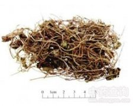

连钱草

拼音
Lián Qián Cǎo
别名
活血丹、金钱草[上海、江苏]、金钱薄荷、落地金钱、肺风草、十八缺、透骨消[四川]
来源
本品为唇形科植物活血丹Glechoma longituba （Nakai）Kupr.的干燥地上部分。春至秋季采收，除去杂质，晒干。
生境分布
生于河边、路边、林间草地、山坡林下。除西北、内蒙古外，全国各地均产。
药材特点
多年生草本。茎细，方形，被细柔毛，下部匍匐，上部直立。叶对生，肾形至圆心形，长1.5～3cm，宽1.5～5.5cm，边缘有圆锯齿，两面有毛或近无毛，下面有腺点；叶柄长为叶片的1～2倍。轮伞花序腋生，每轮2～6花；苞片刺芒状；花萼钟状，长7～10mm，萼齿狭三角状披针形，顶端芒状，外面有毛和腺点；花冠2唇形，淡蓝色至紫色，长1.7～2.2cm，下唇具深色斑点，中裂片肾形；雄蕊4，药室叉开。小坚果长圆形，褐色。花期3～4月，果期4～6月。
性状
本品长10～20cm，疏被短柔毛。茎呈方柱形，细而扭曲；表面黄绿色或紫红色，节上有不定根；质脆，易折断，断面常中空。叶对生，叶片多皱缩，展平后呈肾形或近心形，长1～3cm，宽1.5～3cm，灰绿色或绿褐色，边缘具圆齿；叶柄纤细，长4～7cm。轮伞花序腋生，花冠二唇形，长达2cm。搓之气芳香，味微苦。
性味
辛、微苦，微寒。
功能主治
利湿通淋，清热解毒，散瘀消肿。用于热淋，石淋，湿热黄疸，疮痈肿痛，跌扑损伤。
用法用量
15～30g；外用适量，煎汤洗或取鲜品捣烂敷患处。
化学成分
茎、叶含挥发油，主成分为松樟酮（pinocamphone）、薄荷酮、异薄荷酮、番薄荷酮（pulegone）等，尚含熊果酸、琥珀酸。
药理作用
1：无药理作用数据
摘录
《中国药典》